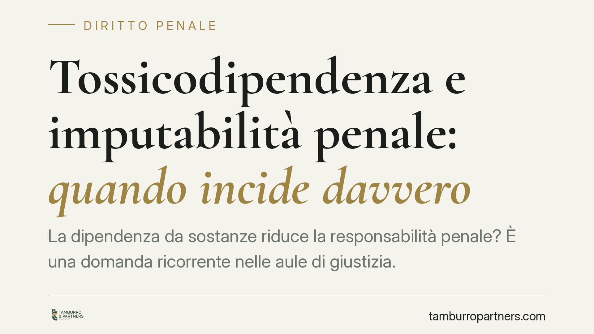

Tossicodipendenza e imputabilità penale: quando incide davvero
La dipendenza da sostanze riduce la responsabilità penale? È una domanda ricorrente nelle aule di giustizia. La risposta, nel nostro ordinamento, è netta ma articolata: la tossicodipendenza non esclude né attenua, di per sé, la capacità di intendere e di volere. Può però assumere rilievo in casi circoscritti. Capire la differenza è essenziale per impostare correttamente una linea difensiva.

Il principio di partenza: imputabilità e capacità
Nel diritto penale nessuno può essere punito per un fatto previsto dalla legge come reato se, al momento in cui lo ha commesso, non era imputabile, cioè capace di intendere e di volere (art. 85 c.p.). L'imputabilità è il presupposto della responsabilità personale, principio ancorato all'art. 27 della Costituzione.
La questione diventa delicata quando l'autore del fatto ha agito sotto l'effetto di sostanze stupefacenti o versa in condizione di dipendenza. Qui il codice adotta una disciplina specifica, che conviene leggere con precisione per evitare equivoci diffusi.
L'inquadramento normativo
Il punto di riferimento è l'art. 92 c.p., dettato in materia di ubriachezza: l'intossicazione non derivante da caso fortuito o forza maggiore non esclude né diminuisce l'imputabilità. In altre parole, chi si è volontariamente posto in stato di alterazione risponde comunque del reato.
L'art. 93 c.p. non introduce una regola autonoma: opera mediante rinvio, stabilendo che le disposizioni sull'ubriachezza si applicano anche ai fatti commessi sotto l'azione di sostanze stupefacenti. La logica, quindi, è la stessa.
Va tenuto distinto l'art. 94 c.p., che riguarda l'ubriachezza (o l'intossicazione) abituale: non è una scriminante, ma una circostanza aggravante. Attenzione a non confonderla con la tossicodipendenza in quanto tale. L'abitualità di cui parla la norma è una condizione penalmente più severa, non un fattore di sconto di pena.
L'unica apertura rilevante è l'art. 95 c.p.: alle condizioni di cronica intossicazione da alcol o da sostanze stupefacenti si applicano le regole sul vizio di mente (artt. 88 e 89 c.p.). La cronica intossicazione, però, è cosa diversa dalla dipendenza: presuppone un'alterazione stabile e permanente, assimilabile a una vera e propria patologia, tale da compromettere in modo duraturo le facoltà psichiche.
Tossicodipendenza, cronica intossicazione, vizio di mente
Il crinale è questo. La tossicodipendenza semplice non esclude e non riduce l'imputabilità: chi assume sostanze e delinque, di regola, risponde pienamente.
La situazione muta quando la dipendenza ha prodotto conseguenze più profonde. Due le vie possibili:
- la cronica intossicazione ex art. 95 c.p., con rinvio agli artt. 88-89;
- il vizio di mente ordinario ex artt. 88-89 c.p., quando la condizione del soggetto integra una vera alterazione psicopatologica (ad esempio un quadro psichiatrico correlato all'uso prolungato di sostanze).
La giurisprudenza di legittimità ha più volte precisato che non basta l'abuso o lo stato di dipendenza per invocare il vizio di mente: occorre dimostrare che quella condizione si sia tradotta in una compromissione effettiva della capacità di intendere e di volere, con solido supporto tecnico. L'orientamento consolidato valorizza dunque il nesso tra uso di sostanze e patologia psichica, non la dipendenza considerata in sé.
Una precisazione metodologica sulle fonti
Su questo tema circolano riferimenti a pronunce recenti, talvolta non ancora verificabili sui canali ufficiali. È una regola di prudenza professionale: prima di fondare una strategia su una singola sentenza, occorre riscontrarne numero, anno e contenuto sulle fonti istituzionali (Gazzetta Ufficiale, sito della Corte costituzionale, massimari di legittimità). L'impianto normativo sopra descritto, in ogni caso, è stabile e non muta con il singolo arresto.
Implicazioni pratiche
Per l'indagato o l'imputato con una storia di dipendenza, questo significa che non esiste alcuno "sconto automatico". Sollevare il tema dell'imputabilità richiede un percorso rigoroso: la prova dell'alterazione psichica, non la semplice allegazione dell'uso di droghe.
Sul piano difensivo cambia tutto a seconda che si punti sull'art. 95 (cronica intossicazione) o sul vizio di mente ordinario: diversi sono i presupposti, le evidenze da raccogliere e gli esiti sul trattamento sanzionatorio e sulle eventuali misure di sicurezza.
Cosa fare in concreto
- Documentare da subito il percorso clinico: cartelle, certificazioni SerD, diagnosi psichiatriche e terapie seguite.
- Distinguere con precisione la posizione: dipendenza semplice, intossicazione abituale (aggravante) o cronica intossicazione con alterazione stabile.
- Richiedere una perizia tecnica adeguata, mirata a dimostrare l'effettiva incidenza sulla capacità di intendere e di volere al momento del fatto.
- Verificare le fonti di ogni pronuncia invocata sui canali ufficiali prima di costruirvi una strategia.
- È opportuno un confronto tempestivo con il difensore prima di assumere scelte processuali, data la complessità dei profili probatori.
Disclaimer
Contributo informativo a cura di Tamburro & Partners - Avv. Giuseppe Tamburro. Non costituisce parere legale.
Ogni condominio ha una storia a sé.
Se gestisci un'amministrazione e vuoi un confronto su una specifica questione condominiale, scrivi allo studio. Ti rispondiamo entro un giorno lavorativo.